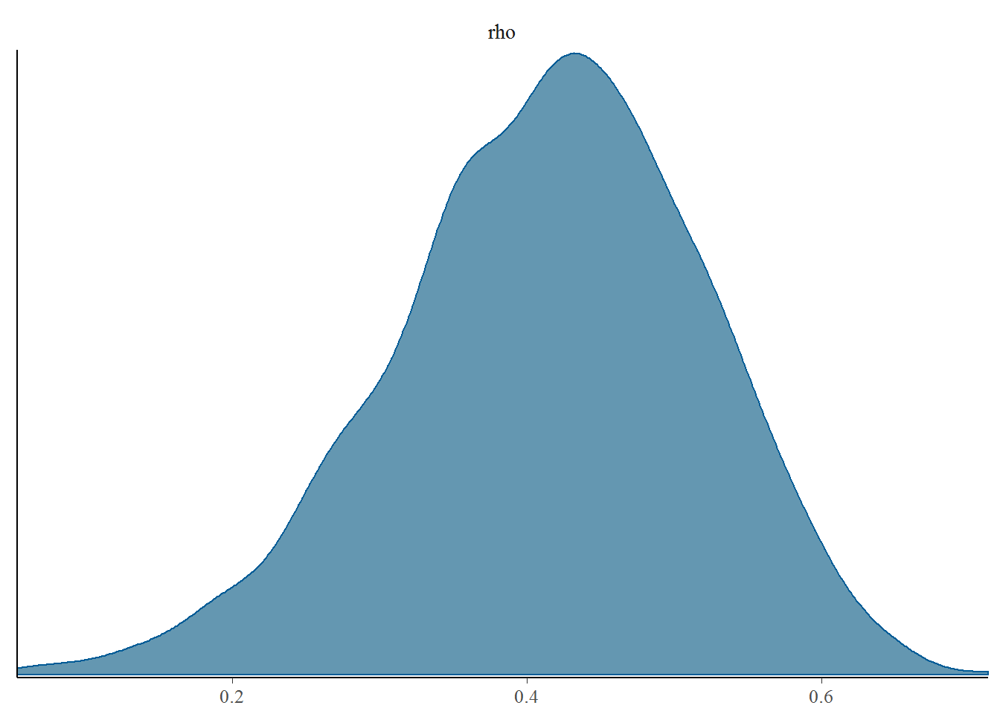

The censcor package provides routines for performing Bayesian estimation of the correlation between two censored variables. The inference is conducted with Stan, which uses the No-U-Turn Hamiltonian Monte-Carlo algorithm for drawing from the posterior distribution.
The main function is censcor, which computes correlations between two variables. censcor takes as arguments a formula describing the correlation to estimate and a data frame. The formula syntax is modeled after the censoring syntax in brms.
The formula syntax is:
censcor(x | cens(x_cens, x_upper_bound) ~ y | cens(y_cens, y_upper_bound), df)Let’s look at some examples of how to specify different types of censoring. The generate_censored_data function generates a data frame of random values for testing the package.
The most basic estimation you can perform is between two variables that are not censored. In this example, the correlation between the x and y columns of df is estimated.
# Generate 100 x and y values with a 0.5 correlation coefficient and no censoring
df <- generate_censored_data(N = 100, rho = 0.5, L_prob = 0)
fit <- censcor(x ~ y, df)Censoring is described with the cens formula function. A separate column is needed for each censored variable to indicate which values are censored, with -1 indicating left censored, 1 indicating right censored, and 2 indicating interval censored. Censored values in x and y should be replaced with the censoring limit.
In this example, both x and y are left-censored. x_cens and y_cens indicate which rows are censored by having the value -1.
# df example:
# x x_cens y y_cens
# 2 -1 1 0 # x is left-censored below 2, y is not censored
# 0 0 4 -1 # x is not censored, y is left-censored below 2
# ...
df <- generate_censored_data(N = 100, rho = 0.5, L_prob = 0.5, direction = -1)
fit <- censcor(x | cens(x_cens) ~ y | cens(y_cens), df)The syntax for right-censoring is the same as before. x_cens and y_cens contain 1s to indicate right-censored values.
# df example:
# x x_cens y y_cens
# 5 1 1 0 # x is right-censored above 5, y is not censored
# 0 0 2 1 # x is not censored, y is right-censored above 2
# ...
df <- generate_censored_data(N = 100, rho = 0.5, L_prob = 0.5, direction = 1)
fit <- censcor(x | cens(x_cens) ~ y | cens(y_cens), df)Interval censored values have lower and upper bounds. In this case, x and y contain the lower interval limit, and separate columns are used to hold the uper interval limit and are specified as the second argument to cens.
# df example:
# x x_upper x_cens y y_upper y_cens
# 1 5 2 1 1 0 # x is interval censored between 1 and 5; y is not censored
# ...
df <- generate_censored_data(N = 100, rho = 0.5, L_prob = 0.5, direction = 2)
fit <- censcor(x | cens(x_cens, x_upper) ~ y | cens(y_cens, y_upper), df)Left, right, and interval censoring can be combined within a data frame.
# df example:
# x x_upper x_cens y y_upper y_cens
# 1 5 2 1 1 0 # x is interval censored between 1 and 5; y is not censored
# 3 3 -1 5 1 1 # x left censored below 3, y is right censored above 5
# -1 -1 1 1 5 2 # x is right censored above -1, y is interval censored between 1 and 5
# ...
df <- generate_censored_data(N = 100, rho = 0.5, L_prob = 0.5, direction = c(-1, 1, 2))
fit <- censcor(x | cens(x_cens, x_upper) ~ y | cens(y_cens, y_upper), df)censcor returns an rstan::stanfit object for several fitted parameters.
mu_x is the estimated mean of the x variablesigma_x is the estimated standard deviation of the x variablemu_y is the estimated mean of the y variablesigma_y is the estimated standard deviation of the y variablerho is the estimated correlation between x and y
library(rstan)
df <- generate_censored_data(N = 100, rho = 0.5, L_prob = 0.5, direction = -1)
fit <- censcor(x | cens(x_cens, x_upper) ~ y | cens(y_cens, y_upper), df, iter = 600)fit## Inference for Stan model: censored_correlations_interval.
## 4 chains, each with iter=600; warmup=300; thin=1;
## post-warmup draws per chain=300, total post-warmup draws=1200.
##
## mean se_mean sd 2.5% 25% 50% 75% 97.5% n_eff
## sigma_x 0.95 0.00 0.11 0.77 0.88 0.94 1.02 1.20 820
## sigma_y 0.83 0.00 0.09 0.67 0.76 0.82 0.88 1.03 842
## mu_x 0.09 0.00 0.12 -0.15 0.02 0.10 0.17 0.30 674
## mu_y 0.16 0.00 0.10 -0.03 0.09 0.16 0.23 0.33 711
## rho 0.41 0.00 0.10 0.19 0.35 0.42 0.49 0.60 1107
## lp__ -191.54 0.06 1.44 -195.04 -192.42 -191.26 -190.43 -189.59 512
## Rhat
## sigma_x 1.00
## sigma_y 1.00
## mu_x 1.01
## mu_y 1.00
## rho 1.00
## lp__ 1.01
##
## Samples were drawn using NUTS(diag_e) at Fri Nov 17 17:15:35 2017.
## For each parameter, n_eff is a crude measure of effective sample size,
## and Rhat is the potential scale reduction factor on split chains (at
## convergence, Rhat=1).You can visualize the estimates using the bayesplot package:
library(bayesplot)## This is bayesplot version 1.2.0mcmc_dens(as.array(fit), pars = c("rho"))